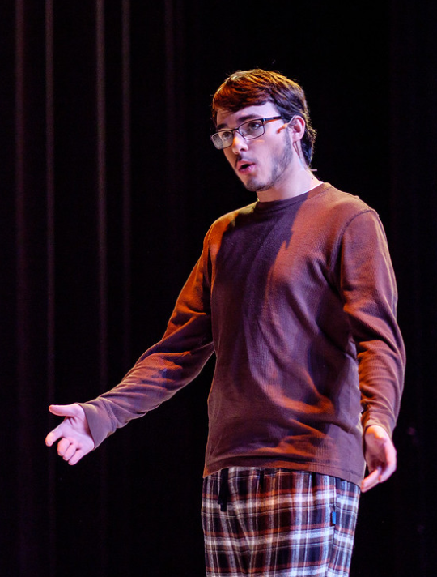

About

Hi, I'm Lucas Pickens, a Junior Software Engineering major at Rose-Hulman Institute of Technology. I am interested in application design, with a bit of web programming knowledge too. I am mostly interested in back-end work, but also dabble in front-end design.
Outside of software, I participate in choir and improv and am very active in theater. In my time at Rose I have been in 7 theatrical productions, playing parts such as Sebastian in The Tempest, Elwood Dowd in Harvey, and Baker in Into the Woods. Along with my extracurriculars, I enjoy reading and playing games of all sorts.